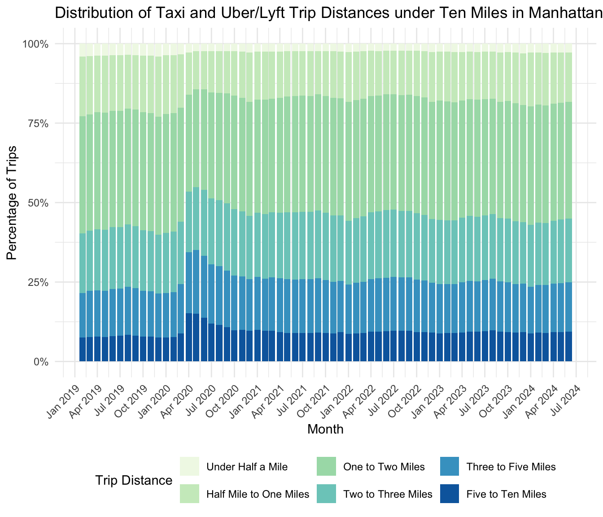
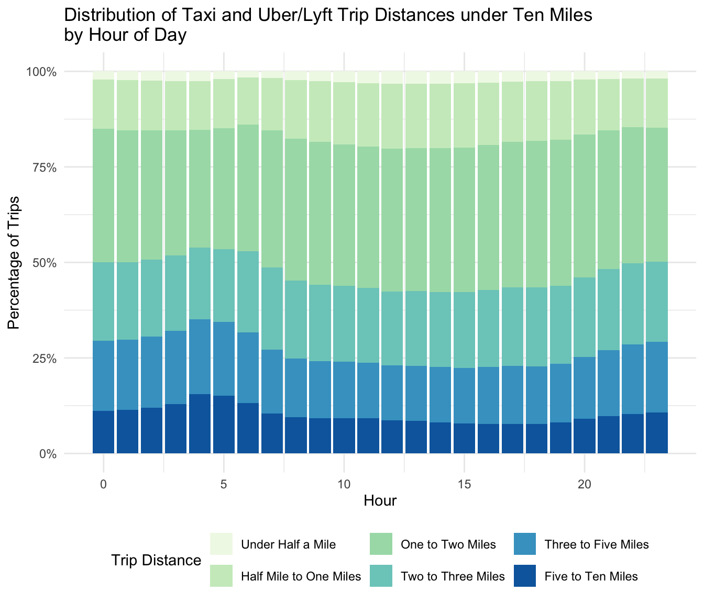
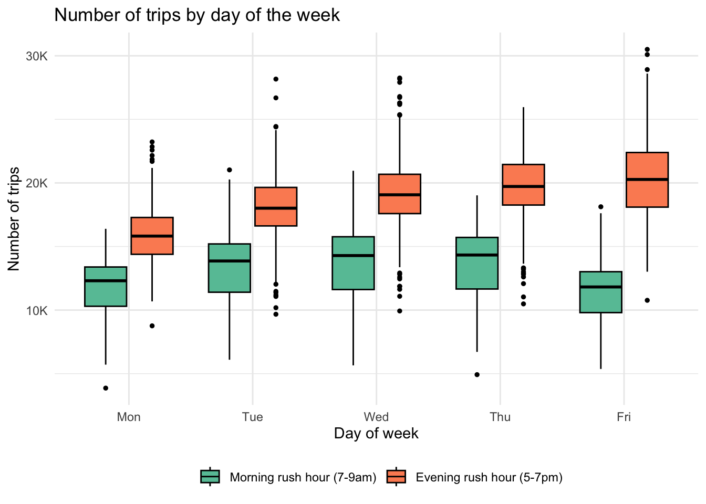
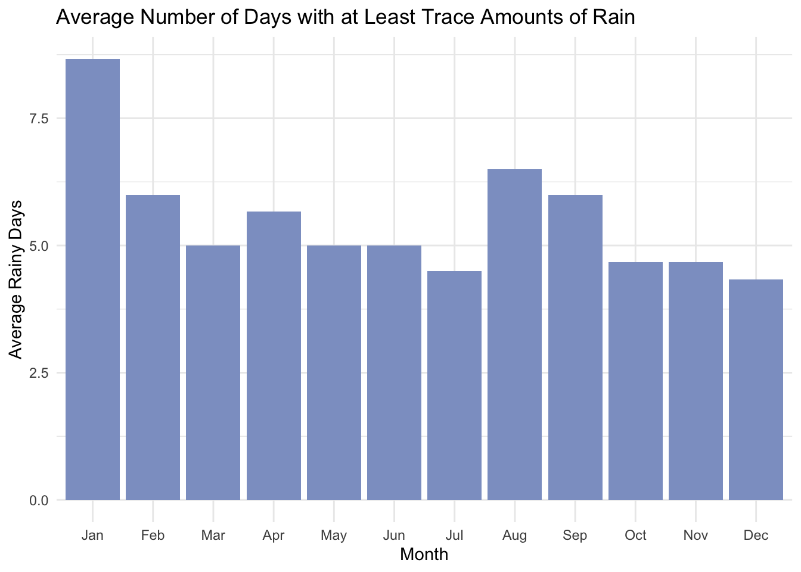
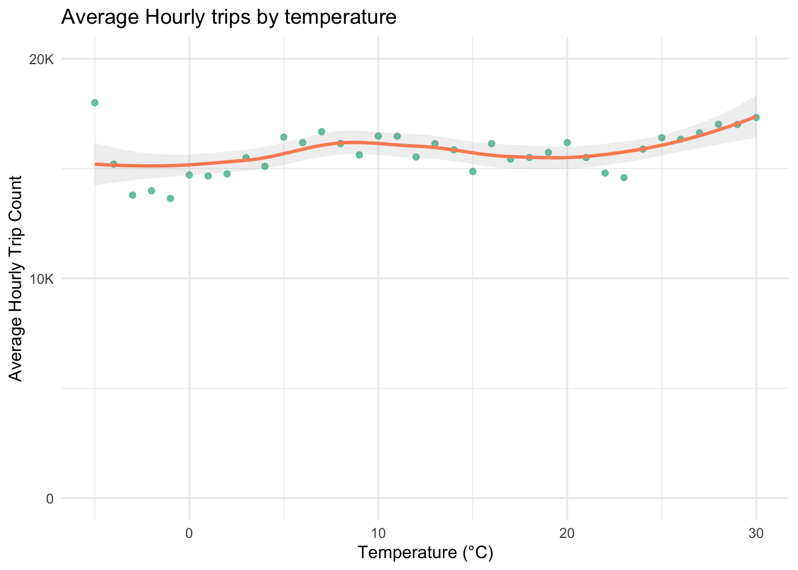
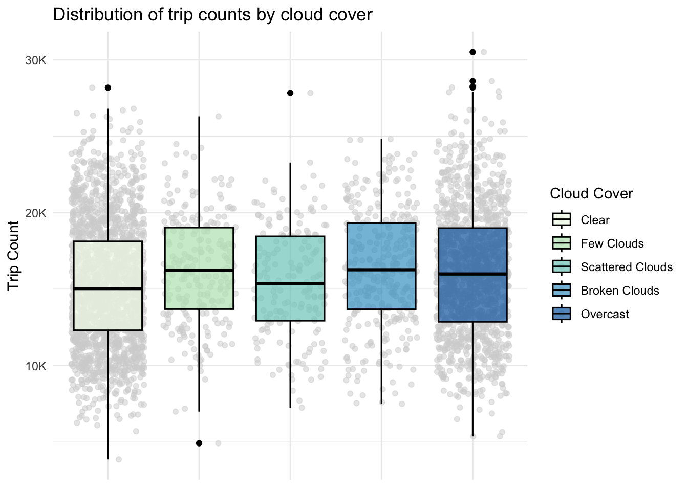
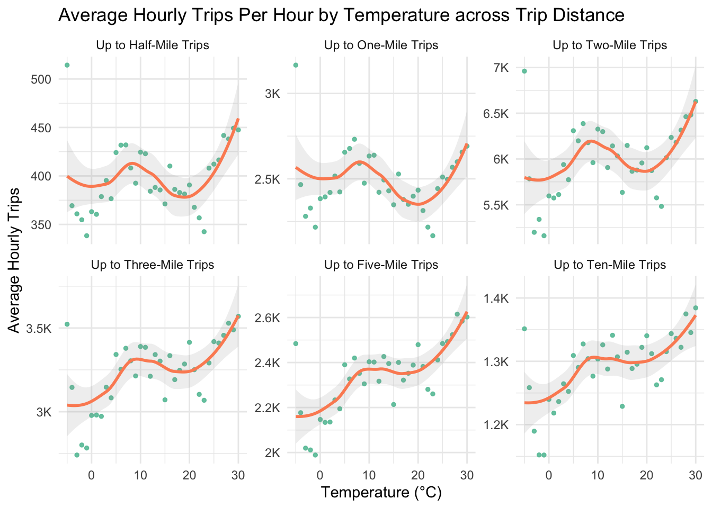
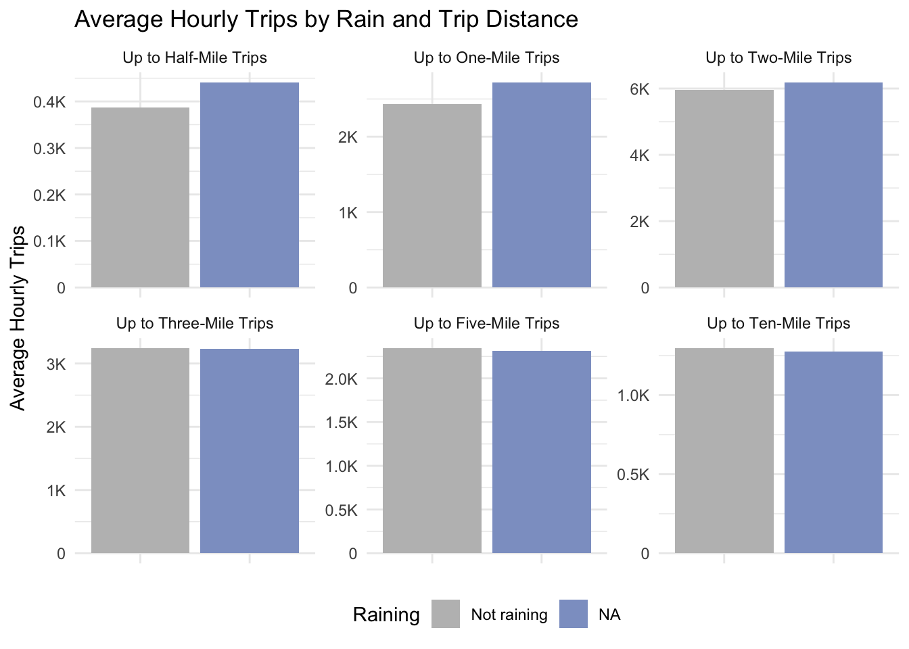
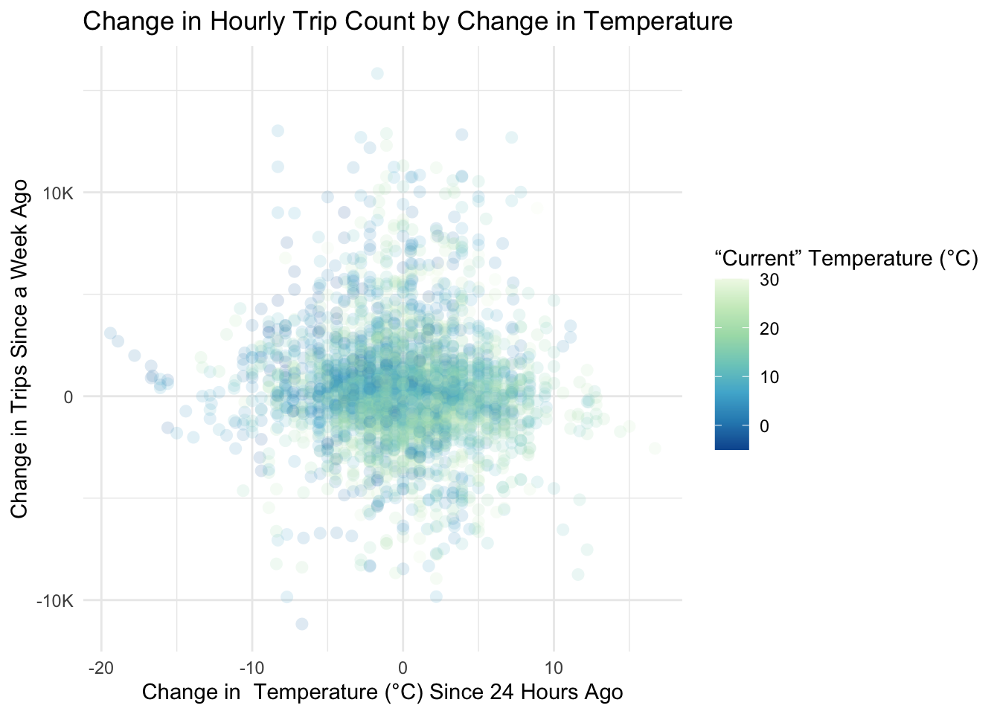

3.1 A New Normal: How the COVID-19 Pandemic Reshaped Taxi Ridership Patterns
From the outset, we knew that we would need to exclude data from the height of Pandemic-era restrictions, as this would likely cloud (no pun intended) relationships between weather and taxi usage. Our intial plan was to contain data from 2019 (pre-Pandemic) to get a baseline to establish normalcy of post-pandemic data. However, we found significant differences in rider behavior between pre- and post-Pandemic periods, forcing us to question the relevance of using pre-Pandemic data at all.
We first looked at trip volume by car type. We knew there was going to be an impact at the height of the Pandemic, but the plot is still striking. We can see when the Pandemic hit in March, 2020. New York City schools closed on March 16, as cases went from a seven-day average of 0 per 100,000 inhabitants at the start of March to an initial peak of about 60 at the end of the month.[1][2] The uncertainty over this initial wave halved the March ridership totals in comparison to February.
Ridership slowly increased from thereon. We can see that two of the FHVHV companies, though only holding small portions of the market, disappeared from the picture. Juno shut down operations in November 2019, with drivers being offered to join Lyft.[3] Via also stopped its ride-sharing operations in December 2021.[4] The cessation of rides from these two companies only lead us toward the most striking aspect of hired car and taxi usage in Manhattan. Not only did usage fall during the pandemic, but we seem to be in a new normal, averaging about 7.5 million rides a month across yellow cabs, Lyft, and Uber. These numbers have held since October 2021, suggesting it may make sense to abandon all data from before this time in order to get a good rhythm of usage.
Code
first_color <-brewer.pal(8, "Set2")[1]df |>mutate(year_month =as.Date(format(date, "%Y-%m-01"))) |>group_by(year_month) |>summarize(monthly_trips =sum(trip_count),monthly_half_mile =sum(half_mile_trips),monthly_one_mile =sum(one_mile_trips),monthly_two_mile =sum(two_mile_trips),monthly_three_mile =sum(three_mile_trips),monthly_five_mile =sum(five_mile_trips),monthly_more_than_five = monthly_trips - monthly_half_mile - monthly_one_mile - monthly_two_mile - monthly_three_mile - monthly_five_mile,pct_half_mile = monthly_half_mile / monthly_trips,pct_one_mile = monthly_one_mile / monthly_trips,pct_two_mile = monthly_two_mile / monthly_trips,pct_three_mile = monthly_three_mile / monthly_trips,pct_five_mile = monthly_five_mile / monthly_trips,pct_more_than_five = monthly_more_than_five / monthly_trips,.groups ="drop" ) |>pivot_longer(cols =c("pct_half_mile","pct_one_mile","pct_two_mile","pct_three_mile","pct_five_mile","pct_more_than_five", ),names_to ="pct_trip_distance_group",values_to ="pct_trip_distance_count" ) |>mutate(pct_trip_distance_group =factor( pct_trip_distance_group, levels =c("pct_half_mile","pct_one_mile","pct_two_mile","pct_three_mile","pct_five_mile","pct_more_than_five" ))) |>ggplot(aes(x=year_month,y= pct_trip_distance_count,fill = pct_trip_distance_group )) +geom_bar(stat="identity", position="stack") +labs(title ="Distribution of Taxi and Uber/Lyft Trip Distances under Ten Miles in Manhattan",x ="Month",y ="Percentage of Trips",fill ="Trip Distance" ) +scale_x_date(date_labels ="%b %Y", date_breaks ="3 months") +scale_fill_brewer(palette ="GnBu",labels =c("pct_more_than_five"="Five to Ten Miles","pct_five_mile"="Three to Five Miles","pct_three_mile"="Two to Three Miles","pct_two_mile"="One to Two Miles","pct_one_mile"="Half Mile to One Miles","pct_half_mile"="Under Half a Mile" ) ) +scale_y_continuous(labels =label_percent()) +theme(axis.text.x =element_text(angle =45, hjust =1),legend.position ="bottom")

The next question we asked to establish a baseline normal was rider travel distance. If number of riders fell overall, did this come equally across all distances, or are people taking less of certain types of trips?
Plotting the distribution of trip distances helped to answer this question. Perhaps as a consequence of less business-related travel because of flexible work schedules, the trips we observed tended to be longer. Shorter trips–those of one mile–make up a smaller percentage of the total, while trips of more than three miles make up a larger percentage of the total since the onset of the Pandemic.
Both analyses suggest certainly abandoning pre-Pandemic data as well as all of the 2020 data. While the distribution of distances stabilizes at the beginning of 2021, the number of trips does not reach its new normal until around October 2021, suggesting that is the true step into the post-Pandemic order.
Given these insights, we will focus only on data from October 2021 onward as we move forward with our analysis.
Code
# Filter out pre- and during-Pandemic data.df <- df |>filter(df$date >=as.Date("2021-10-01"))
3.2 Patterns in Taxi Data
Code
# Pivot by trip distance bin.pivot_trip_distance_df <- df |>mutate(temperature =round(temperature) ) |>mutate(up_to_ten_mile_trips = trip_count -rowSums(across(ends_with("mile_trips"))) ) |>pivot_longer(cols=c(ends_with("mile_trips")),names_to="trip_type",values_to="trip_type_count", ) |>mutate(trip_type =factor(trip_type, levels =c("half_mile_trips", "one_mile_trips", "two_mile_trips", "three_mile_trips", "five_mile_trips", "up_to_ten_mile_trips" ),labels =c("Up to Half-Mile Trips","Up to One-Mile Trips","Up to Two-Mile Trips","Up to Three-Mile Trips","Up to Five-Mile Trips","Up to Ten-Mile Trips" ),ordered =TRUE))
The goal of our analysis is to see trends in rider usage in relationship with changes in the weather. In order to make claims about these relationships, we need to limit other components that may influence taxi ridership. Therefore, we explored variations in taxi usage based on hour of the day, day of the week, and month of the year. For instance, comparing ridership at 3 AM on a Wednesday to 5 PM on a Thursday would be misleading since baseline usage at these times differs inherently. Establishing a consistent baseline for “normal” taxi ridership allows for more meaningful comparisons and insights. But to establish a baseline, we also just need to see what the patterns even are in the data. In the following section we look at hourly, day of the week, and monthly/seasonal trends.
3.2.1 Ridership by the Clock: When Are We Hailing Taxis, And Where Are We Going?
An interesting result of our analysis is that trip distance did not appear to have any relationship with day of the week or month of the year. However, it did have some variation by time of day.
Code
df |>group_by(hour) |>summarize(monthly_trips =sum(trip_count),monthly_half_mile =sum(half_mile_trips),monthly_one_mile =sum(one_mile_trips),monthly_two_mile =sum(two_mile_trips),monthly_three_mile =sum(three_mile_trips),monthly_five_mile =sum(five_mile_trips),monthly_more_than_five = monthly_trips - monthly_half_mile - monthly_one_mile - monthly_two_mile - monthly_three_mile - monthly_five_mile,pct_half_mile = monthly_half_mile / monthly_trips,pct_one_mile = monthly_one_mile / monthly_trips,pct_two_mile = monthly_two_mile / monthly_trips,pct_three_mile = monthly_three_mile / monthly_trips,pct_five_mile = monthly_five_mile / monthly_trips,pct_more_than_five = monthly_more_than_five / monthly_trips,.groups ="drop" ) |>pivot_longer(cols =c("pct_half_mile","pct_one_mile","pct_two_mile","pct_three_mile","pct_five_mile","pct_more_than_five", ),names_to ="pct_trip_distance_group",values_to ="pct_trip_distance_count" ) |>mutate(pct_trip_distance_group =factor( pct_trip_distance_group, levels =c("pct_half_mile","pct_one_mile","pct_two_mile","pct_three_mile","pct_five_mile","pct_more_than_five" ))) |>ggplot(aes(x=hour,y= pct_trip_distance_count,fill = pct_trip_distance_group )) +geom_bar(stat="identity", position="stack") +labs(title ="Distribution of Taxi and Uber/Lyft Trip Distances under Ten Miles \nby Hour of Day",x ="Hour",y ="Percentage of Trips",fill ="Trip Distance" ) +scale_fill_brewer(palette ="GnBu",labels =c("pct_more_than_five"="Five to Ten Miles","pct_five_mile"="Three to Five Miles","pct_three_mile"="Two to Three Miles","pct_two_mile"="One to Two Miles","pct_one_mile"="Half Mile to One Miles","pct_half_mile"="Under Half a Mile" ) ) +scale_y_continuous(labels =label_percent()) +theme(legend.position ="bottom")

Rider behavior does seem to be influenced by time of day. From the plot above we can see that longer trups are more common during the late-night and early-morning hours. Perhaps this indicates that people travel greater distances for late-night activities. The distribution of trip distances appears to stabilize between 7am and 7pm, with higher proportion of shorter-distance trips compared to long. Interestingly, time of day was the only time-measure that seemed to impact this aspect of rider behavior: day of the week and month do not appear to have any influence on trip distance. This information isn’t totally revolutionary, though it may underscore the importance of focusing on particular hours to account for variability in trip length or usage patterns.
With respect to trip volume, there is a significant variation by time of day as anticipated. When plotting all dates, we noticed some clustering in trip counts by hour, and were able to decipher that this behavior is largely related to the day of the week.
Code
temp_df <- df |>mutate(day =weekdays(date), is_weekend =factor(ifelse(day %in%c("Saturday", "Sunday"), "Weekend", "Weekday"),levels =c("Weekend", "Weekday")),day =factor(day, levels =c("Sunday", "Monday", "Tuesday", "Wednesday", "Thursday", "Friday", "Saturday")) ) |>group_by(day, hour, is_weekend) |>summarize(mean_trip_count =mean(trip_count, na.rm =TRUE), .groups ="drop")temp_df |>ggplot(aes(x = hour, y = mean_trip_count, group = day, color = is_weekend)) +geom_line(linewidth =1) +geom_text_repel(data = temp_df|>filter(hour ==max(hour)), aes(label = day),nudge_x =1,size =3,fontface="bold" ) +scale_color_manual(values =c("Weekend"= base_color, "Weekday"= secondary_color),labels =c("Weekend", "Weekday"),name ="Day Type" ) +scale_x_continuous(breaks =seq(0, 23, by =3)) +scale_y_continuous(labels=thousands) +labs(title ="Trip Counts by Hour with Day of Week Labels",x ="Hour of the Day",y ="Average Trip Count",color ="Day Type" ) +theme_minimal() +theme(legend.position ="bottom")
After identifying clusters in ridership patterns, we were able to delineate that a major source of variation in rider usage of hours of the day came from if it was a weekday or weekend. It appears that weekdays follow a somewhat similar trend by hour, with weekends exhibiting more unique trends. Saturday and Sunday show similar ridership in the morning (relatively high, carryover ridership from people going out late the previous night). However, Sunday has noticeably lower ridership in the evening; logically this makes sense as people are likely not engaging in as much nighttime activity before the workweek begins again. Because these patterns are distinct from one another and differ from the work-week trends, it will likely be better to stick to weekdays moving forward where the pattern is more consistent.
Looking at weekdays,we notice strong bimodality during rush hour periods (7am-9am, 5pm-7pm). Perhaps we should limit our focus to just rush hour during working days to limit some variability or influence of time on taxi usage. Logically we might frame it as taking a taxi to and from work, but if its a nice day, I might decide to walk home from the office. If it’s below freezing, I am not going to go out of my way to walk 40 minutes home, though!
Moving forward, we’ll restrict the analysis to non-holiday weekday rush hour periods (7-9 AM and 5-7 PM) to reduce variability and emphasize patterns tied to commuting behavior.
3.2.2 Rush Hour Routines: Patterns Across Days and Seasons
Now that we are focused only on rush hour times, let’s take a look at any other day of the week and seasonal patterns.
Code
df <- df |>mutate(rush_hour_group =case_when( hour %in%c(7, 8, 9) ~"Morning rush hour (7-9am)", hour %in%c(17, 18, 19) ~"Evening rush hour (5-7pm)",.default ="Overall" ) |>factor(levels =c("Overall", "Morning rush hour (7-9am)", "Evening rush hour (5-7pm)"), ordered =TRUE))df |>mutate(day =factor(wday(date, label =TRUE, abbr =TRUE), levels =c("Sun", "Mon", "Tue", "Wed", "Thu", "Fri", "Sat"))) |>ggplot(aes(x = day, y = trip_count, fill=rush_hour_group)) +geom_boxplot(color ="black", outlier.color ="black", outlier.size =1) +scale_y_continuous(label=thousands)+scale_fill_manual(values =c("Overall"= base_color, "Morning rush hour (7-9am)"= secondary_color, "Evening rush hour (5-7pm)"=brewer.pal(n =8, name ="Set2")[3])) +labs(title ="Number of trips by day of the week", x ="Day of week", y ="Number of trips", fill="") +theme_minimal() +theme(legend.position="bottom")

Even within the weekday rush hour subset, ridership varies. We see that Mondays have the lowest median trip counts and the most compact IQR, which could be related to Monday as a common WFH day (explaining lower average) and people tend to be consistent in their behavior at the start of the week (less variability). Tuesday through Thursday, we see a pretty consistent median and variabilty. Friday, we see the highest variability, likely because people engage in social activities after work. Tuesday through Thursday show relatively consistent median trip counts and narrower distributions, reflecting more regular commuting patterns. There are some outliers visible on the plot worth investigating, perhaps relating to around-holiday times, special events, or weather conditions.
Code
df |>ggplot(aes(x = month_abbr, y = trip_count)) +geom_boxplot(fill=base_color, color ="black", outlier.color ="black", outlier.size =1) +scale_y_continuous(label=thousands)+labs(title ="Number of trips by month", x ="Month", y ="Number of trips") +theme_minimal()
Looking at the trend by month, we can see some seasonality. July and August have the lowest median trip counts and tighter distributions. From this we may be able to infer that there is reduced ridership during summer months, perhaps due to vacations, lighter commuting schedules, or more people deciding not to take a cab if it is nice out! January shows another low median, maybe indicating continued end-of-year holidays and vacations. February through June is fairly consistent in terms of median and IQR.
Even within rush hour periods, external factors like days of the week and time of year still appear to have some influence on ridership. This is important to note because it will impact how we assess changes in ridership due to weather conditions later on.
3.3 Patterns in Weather Data
We chose to limit our weather analysis to three variables: temperature, cloud cover, and rain. This provides three kinds of variables (numeric, categorical, boolean) while also giving a sense of easy to understand information that might be used by a traveler electing to walk or not. That is, a consideration of whether it is sunny or not is perhaps clearer to a person choosing to ride the cab than the dew point.
As noted earlier, the temperature fluctuates as we would expect. What struck us in these boxplots is how the outliers are distributed, particularly in March, April, and May, which can run hot. This is a fantastic opportunity for seasonal analysis in limiting our investigation, but we have already trimmed our data down so much. Preparing for a specific springtime analysis would require reconsidering how we collect and pre-process our data.
Another point of analysis, however, is to note that everything below -10° or above 30° or so seems to be an outlier. If we consider the distribution all temperatures, we can see that those tails are small and long and might affect the analysis we do moving forward.
Code
df |>ggplot(aes(temperature)) +geom_histogram(color="white", fill=base_color) +scale_y_continuous(labels=thousands) +labs(title ="Distribution of Integral Temperatures", x ="Temperature (°C)", y ="Count")
Moving forward, we will limit our analysis to temperatures between -5° and 30°.
Cloud cover is measured in “oktas,” which we have converted to an ordinal categorical variable, that turns “less cloudy” into a positive measure when comparing two different weather reports.
Value
Description
0
Clear
-1
Few clouds
-2
Scattered clouds
-3
Broken clouds
-4
Overcast
Code
df |>group_by(month_abbr, cloud_cover) |>tally() |>group_by(month_abbr) |>mutate(percentage = n /sum(n) *100) |>ungroup() |>ggplot(aes(x = month_abbr, y = percentage, fill =as.factor(cloud_cover))) +geom_bar(stat ="identity", position ="stack") +labs(title ="Percentage of Cloud Cover by Month",x ="Month",y ="Percentage",fill ="Cloud Cover" ) +scale_fill_brewer(palette ="GnBu" ) +theme_minimal()
Cloud cover less obviously seasonal than temperature, and in general days are clear. The lack of clear seasonality helps us generalize over the year, and the trend toward clear days may help cloudiness jump out more as an excuse to take a cab instead of walk.
Code
df |>group_by(date =as.Date(date)) |>summarize(rain_day =any(rain ==TRUE),across(c(year, month_abbr), ~first(.)) ) |>group_by(year, month_abbr) |>summarize(rainy_days =sum(rain_day), .groups ="drop", ) |>group_by(month_abbr) |>summarize(avg_rainy_days =mean(rainy_days)) |>ggplot(aes(x = month_abbr, y = avg_rainy_days)) +geom_bar(stat ="identity", fill = base_color) +labs(title ="Average Number of Days with at Least Trace Amounts of Rain",x ="Month",y ="Average Rainy Days" )

In limiting our data just to rush hours, the amount of rain we capture has also been greatly diminished. Where earlier we were averaging about 15 days a month of rain, a lot of that rain fell outside of rush hour, meaning the distribution changes remarkably. This will actually help in later analysis because, like we cloud cover, it makes rain rarer and perhaps a more notable indicator of taxi usage.
3.4 Weather vs. Trips: Can We Define “Nice” Weather from Ridership Patterns?
Now that we have looked at initial patterns in ridership and weather separately, let’s put them together and see if we can make any initial interpretations regarding how weather might impact rider behavior. We have two variables to assess ridership (trip_count and its various distance bands) and the three weather variables, (temperature, cloud_cover, and rain).
Code
df |>mutate(temperature =round(temperature)) |>group_by(temperature) |>summarize(avg_trips_by_degree=mean(trip_count), .groups ="drop") |>ggplot(aes(x = temperature, y = avg_trips_by_degree)) +geom_point(alpha =0.9, color = base_color) +geom_smooth(method ="loess", se = T, color = secondary_color, alpha=0.15, span=0.75) +scale_y_continuous(labels = thousands, breaks =pretty_breaks(n =3), limits=c(10000,20000)) +labs(title ="Hourly Trip Count by Integral Temperature", x ="Temperature (°C)", y ="Hourly Trip Count") +theme_minimal()

Looking at average trip count at different temperatures, we can point out some obvious things. The data is a lot more sparse at extreme temperatures, so even taking the average per integer temperature, we get some weird values and higher variability. This is particularly true on the cold side. Hourly ridership seems to kind of stabilize in the middle temperatures. We see a slight increase in ridership at the high extremes, particularly above 30°C, suggesting that people may prefer to take a cab instead of walk home on extremely hot days. Additionally, we see a subtle dip at 20°C, suggesting that is a great time for walking– it is neither too hot, nor too cold. These could be our first indications of what we may consider to be a “nice” day.
Code
ggplot(df, aes(x = cloud_cover, y = trip_count, fill=cloud_cover)) +geom_point(position="jitter", alpha=0.5, color="lightgrey") +geom_boxplot(alpha=0.7, outlier.alpha=1, color="black", outlier.color="black", linewidth=0.55) +scale_fill_brewer(palette ="GnBu") +scale_y_continuous(labels=thousands, breaks =pretty_breaks(n =3)) +labs(title ="Distribution of trip counts by cloud cover", x ="Cloud Cover", y ="Trip Count", fill="Cloud Cover") +theme_minimal() +theme(axis.title.x=element_blank(), axis.text.x=element_blank(), axis.ticks.x=element_blank())

Trends in ridership according to cloud cover are a bit difficult to parse out. The vast majority of days fall into either clear or overcast categories, and their values are quite similar. Variations in the intermediate categories could likely be driven by the smaller sample size, rather than any meaningful difference in rider behavior.
3.4.1 Just another rainy day
Coming into this analysis, I speculated that rain might be a driving factor in ridership patterns. Going to work, the desire to arrive at work looking presentable, instead of with soaked clothes or damaged belongings, might lead people to opt for more comfortable transportation. Sometimes even the trek to the subway is too much! The same could be true of the evening, however, if you have after-work drinks and want to look nice, or again ur belongings. sometimes you want to look presentable for a meeting instead of walking, biking, or sometimes even just trekking to a subway.
On the other hand, if it is after work and it is beautiful out, I might take the time to walk the 3 miles home. And while I am a person who loves going on a walk or run in the rain, I have to be in the right mood for it. If I am coming home from a stressful day at work, getting soaked in rain might set me over the edge. Sometimes your comfort is worth the expense! Both of these might lead to a greater difference in activity on raining vs non raining days.
Setting out to answer these questions, I first compared the distribution of trips per hour by rain status. Because rain is relatively infrequent during the specific rush hour periods to which we have subset our data, I decided to scale the distributions to density to get a fair comparison. I also broke it up into temperature groups to eliminate the issue of it raining more often at particular temperatures.
Code
df |>mutate(rain=as.factor(ifelse(precipitation!=0, "Raining", "Not raining"))) |>ggplot(aes(x = trip_count, fill = rain)) +geom_density(alpha =0.7) +scale_fill_manual(values =c("Not raining"="grey", "Raining"= rain_color)) +scale_x_continuous(labels=thousands)+labs(title ="Density of trip count by rain status", x ="Number of trips in an hour", y ="Density", fill ="Rain Status") +theme_minimal()
The plot above may suggest that there is slightly greater ridership when it is raining. While the density curves largely overlap, suggesting some but not a substantial impact of rain on trip distribution, there are some things to take note of. First, the distribution of number of trips for raining days (blue) appears to be slightly shifted right towards higher trip counts. This could indicate a slight increase in trip demand during rainy periods. Moreover, we see more extreme trip counts in the raining distribution: the tail is slightly longer on the right side. More extreme trip counts might imply that often unusually high demand occurs on days that it rains.
Perhaps include: NOPE Next, I was curious again about patterns in morning versus evening ridership. Do people have more rigid routines in the morning compared to the evening? Or are they more likely to take a cab in the morning if it is raining because they are worried about their appearance at work?
From the boxplots, we can see the evening rush hour has a slightly higher median AND IQR when it is raining compared to times it does not rain. This suggests that people are perhaps more flexible in the evening. I might not be planning to walk to work on any given day, but in the summer when it is nice out sometimes I spontaneously walk home from work instead of my usual transportation. On the way to work though, people will hunker down and continue their schedule. Potentially illuminates that people are slightly more rigid in morning routines compared to evening routines. Why would I pay a lot of money to get to my place of work (vom emoji) after all?
Now that we have refocused our attention to a smaller subset of the data, we can look at some initial relationships between the two central taxi variables (trip_count and its various distance bands) and the three weather variables, (temperature, cloud_cover, and rain).
Code
pivot_trip_distance_df <- df |>mutate(up_to_ten_mile_trips = trip_count -rowSums(across(ends_with("mile_trips"))) ) |>pivot_longer(cols=c(ends_with("mile_trips")),names_to="trip_type",values_to="trip_type_count", ) |>mutate(trip_type =factor(trip_type, levels =c("half_mile_trips", "one_mile_trips", "two_mile_trips", "three_mile_trips", "five_mile_trips", "up_to_ten_mile_trips" ),labels =c("Up to Half-Mile Trips","Up to One-Mile Trips","Up to Two-Mile Trips","Up to Three-Mile Trips","Up to Five-Mile Trips","Up to Ten-Mile Trips" ),ordered =TRUE) ) pivot_trip_distance_df |>group_by(trip_type, temperature) |>summarize(avg_trips_by_degree=mean(trip_type_count),.groups ="drop" ) |>ggplot(aes(temperature, avg_trips_by_degree)) +geom_point(color=base_color, size=1, alpha=0.5) +scale_y_continuous(labels = thousands,breaks =pretty_breaks(n =3) ) +geom_smooth(color=secondary_color, method="loess", linewidth=1, se=TRUE, alpha=0.15)+labs(title ="Average Hourly Trips Per Hour by Temperature across Trip Distance",y ="Average Hourly Trips",x = temp_label,fill ="Count" ) +facet_wrap(~ trip_type, ncol =3, nrow =2, scales="free_y")

In retrospect, our distance bins may have been a bit optimistic, as no matter how nice it is, there is probably not much of a difference between a five-mile and ten-mile trip if you would rather walk. But on the shorter trips, where the choice between taxi and walk might be more salient, especially during rush hour,
pivot_trip_distance_df |>group_by(trip_type, rain) |>summarize(avg_trips =mean(trip_type_count, na.rm =TRUE),se =sd(trip_type_count, na.rm =TRUE) /sqrt(n()),.groups ="drop" ) |>ggplot(aes(x = rain, y = avg_trips, fill = rain)) +geom_bar(stat ="identity", position ="dodge") +# geom_errorbar(aes(ymin = avg_trips - se, ymax = avg_trips + se),# width = 0.2, position = position_dodge(0.9)) +scale_y_continuous(labels=comma)+scale_fill_brewer(palette ="Set2") +labs(title ="Average Hourly Trips by Rain and Trip Distance",x ="Rain",y ="Average Hourly Trips",fill ="Rain" )+facet_wrap(~trip_type, scales ="free_y") +theme(axis.title.x =element_blank(),axis.text.x =element_blank(),legend.position ="bottom" )

3.5 Doing the Timeshift
With these provocative initial conclusions, we decided to move forward to see if we could relativize the concept of “nice.” The issue here became so perceptual, however, we are not certain we solved a way out of it. After all, “it’s too nice out to take a cab” implicitly invokes a rather recent moment in time when it was not nice. Perhaps it is too nice since it is abnormally warm, or sunny after a week of clouds. Or sunny in the early evening after a rainy morning. We could track those kinds of patterns. However, mapping it onto the taxi data presents special challenges.
That is, the distinct variability from day-to-day of taxi usage, even limiting ourselves to rush hour on weekdays, means we cannot chain multi-day patterns as in the distinctions above.
So we invented a workaround and wanted to see how it would help. To wit, we compared hourly trip counts on a given day to the same hour on the same day of the week the previous week. Additionally, we compared weather data to the same hour of the previous day. Our hope was that this would capture some of the compressed sense of “nice” as opposed to “unnice” with a comparison to a similar day for ridership. Perhaps we would see a similar effect as above.
We also decided to stick to analyzing temperature alone, given time considerations.
Code
df |>ggplot(aes(temperature_change_since_prev_day, trip_count_change_since_prev_week, fill=temperature)) +geom_point(alpha=.15, size=3, stroke=0, shape=21 ) +scale_fill_distiller(palette="GnBu", direction=-1) +scale_y_continuous(labels=thousands) +labs(title ="Change in Hourly Trip Count by Change in Temperature",x =paste("Change in ", temp_label, "Since 24 Hours Ago"),y ="Change in Trips Since a Week Ago",fill =paste("“Current”", temp_label) )

The distribution here suggests that trips don’t change much when the temperature also does not change much. If we squint, we imagine more dots in the II quadrant (negative \(x\), positive \(y\)), which confirms our idea that people ride less when it is nicer out. But maybe it is our imagination.
# A tibble: 5 × 2
Quadrant n
<chr> <int>
1 Got Warmer & Fewer Trips (IV) 980
2 Got Warmer & More Trips (I) 959
3 Got Cooler & More Trips (II) 953
4 Got Cooler & Fewer Trips (III) 717
5 <NA> 237
There is not much of an effect here, and, what’s more, as we saw above, “getting warmer” only works until the temperature hits a threshold where it is too hot to walk. Even if we limit ourselves to the band of 17-21°, however, we can still see that the I quadrant is most populated.
In order to determine variations in taxi usage, we needed to establish a baseline “normal” in order to verify fluctuations in the data. How can we infer an abberration if we don’t know what normal is? How does cab usage regularly fluctate across the week according to work-life patterns, and how does it fluctuate by season?